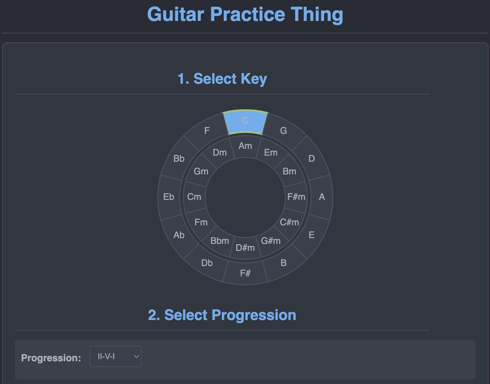

Bridging the Gap Between Complex Ideas and Clear Action.
My work focuses on making the intricate accessible and actionable through analysis and communication.
「複雑な考えを、分かりやすい行動につなぐ」
調べること・話すことで、複雑なことを「分かりやすく」「行動しやすく」します。My Journey
From Curiosity to Operations
My career path reflects a deep curiosity about how different systems work, stemming partly from my background as a Japanese major exploring language and culture. This curiosity often led me to operational roles where I could tackle poorly understood processes. I actively moved from Sales to Operations at Apple specifically to demystify the 'black box' of backend logistics, driven by a desire to learn what was unfamiliar. This same drive motivates my current exploration of AI through Pursuit – diving into a complex, evolving field to gain new skills and understand how technology can solve operational challenges in novel ways, sometimes seeking opportunities where my language skills might add value. It's rooted in my belief that continuous learning is essential.
Developing Analytical Skills at Apple
At Apple, I developed strong investigative and analytical skills, using SAP and collaboration to resolve complex inventory issues and understand root causes. I translated this analysis into tangible results, like cutting customer pickup times by 50% and improving inventory accuracy through process changes. My current AI training focuses on practical application, using tools like Langchain for data parsing and leveraging generative AI to rapidly prototype solutions. My comfort with complex systems like SAP allows me to quickly learn and apply these new AI tools effectively.
My Vision: Translating Complexity
I offer a unique blend of grounded operational experience and emerging AI skills, enabling me to realistically assess where technology can provide practical value in complex, real-world scenarios. My 'trial-by-fire' background ensures I focus on solutions that work, and I excel at translating technical details into clear insights for diverse audiences, drawing on perspectives gained from cross-cultural study. Fueled by a 'need to know,' I dive deep to understand systems, troubleshoot effectively, and ensure solutions genuinely support operational teams, rather than just implementing tech for its own sake.
My core vision is to act as a 'translator of complexity,' bridging the gap between technology (especially AI) and practical operational needs to make systems understandable and effective.
Professionally, I'm a versatile problem-solver and collaborator, adapting my approach to best support my team and the challenge at hand. I believe AI should serve as a tool to automate routine work, freeing people for more critical tasks, and I aim to help build those efficient, human-centric environments. Achieving this provides the foundation for pursuing my personal passions outside of work.
View Full Résumé (PDF)道のり
興味からオペレーションへ
私の仕事の経験を見ると、「いろいろなシステムはどうやって動くのか」とても知りたいと思ってきました。大学で日本語を勉強したことも、その理由の一つです。この「知りたい」という気持ちから、よくオペレーションの仕事を選び、分かりにくいプロセスを何とかしようと思いました。
Appleでは、自分からセールスからオペレーションに移りました。その理由は、よく分からなかったバックエンドの物流の「ブラックボックス」をはっきりさせたかったことと、知らないことを学びたいという気持ちがあったからです。この同じ「学びたい」という気持ちが、今AIを勉強している理由です。Pursuit Fellowshipのおかげで、この複雑で変わっていく新しいこと（AI）に挑戦しています。新しい技術がオペレーションの問題を解決するのにどう役立つか、そして新しいスキルを身につけたいと思っています。時々、私の日本語のスキルが役に立つ仕事も探しています。「ずっと学び続けることが大切だ」と強く信じています。
Appleで、調べるスキルを伸ばした経験
Appleでは、よく調べて分析するスキルがとても上手になりました。SAPを使ったり、他の人と協力したりしました。 それで、難しい在庫の問題を解決し、その原因も理解できました。この分析から、具体的な結果も出すことができました。例えば、お客様が商品を受け取る時間を半分にし、やり方を変えることで在庫の正確さもアップさせました。
今のAIの勉強では、実際に使うことを一番大切にしています。例えば、Langchainのようなツールでデータを分かりやすく整理したり、生成AI（GenAI）を使って解決方法のプロトタイプを速く作ったりする練習をしています。SAPのような複雑なシステムに慣れているおかげで、これらの新しいAIツールも速く学び、うまく使うことができます。
目指すは「複雑さの翻訳家」
私には、実際のオペレーションのしっかりした経験と、新しいAIのスキルの両方があります。そのため、複雑で現実の場面で、技術がどこで本当に役に立つか、よく判断できます。
これまでの大変だったけれど実践的な経験から、本当に機能する解決方法を重視します。また、専門的な細かいことも、いろいろな人に分かりやすく説明するのが得意です。これは、他の文化を学んだ経験から得た考え方のおかげでもあります。
「もっと知りたい」という強い気持ちがあるので、システムを深く理解しようとします。問題が起きた時はうまく対応し、技術のためだけに技術を使うのではなく、解決方法が本当にオペレーションのチームの役に立つように気をつけています。
私の大切なビジョンは、「複雑なことの翻訳者」のような役割をすることです。技術（特にAI）と、現場で本当に必要なことをつなぎ、システムを分かりやすく、役に立つものにしたいです。
仕事では、いろいろな問題に対応でき、チームの人と協力するのが得意です。チームやその時の問題に合わせて、一番良いやり方を考えます。
AIは、決まった作業を自動でするための便利な道具として、人々がもっと大切な仕事に集中できるように助けるべきだと思います。私は、そのような効率が良くて、人間中心の環境を作るお手伝いをしたいです。
これを達成することが、仕事以外の自分の好きなことや趣味を楽しむための基礎になると信じています。
View Full Résumé (PDF)Featured Project: Guitar Practice Tool
Challenge: Many guitarists struggle with understanding music theory concepts like keys and scales in real-time practice.
Solution: I developed a web application that provides immediate, visual feedback. It plays chord drones in a selected key/progression and uses microphone input to indicate if the player's notes are in key. It also displays interactive fretboard diagrams.
Impact: This tool translates abstract music theory into an intuitive practice aid, making learning more engaging and effective by providing instant, easy-to-understand feedback.
Featured Project: Guitar Practice Tool
課題：多くのギタリストが、練習中にキーやスケール（音階）といった音楽の基本的なルールをリアルタイムで理解するのに苦労しています。
解決策：すぐに目で見て分かるフィードバックを出すウェブアプリを作りました。選んだキーやコード進行に合わせてドローン音（持続音）を鳴らし、マイク入力で弾いた音がキーに合っているかを示します。また、クリックなどで操作できるフレットボードの図も表示します。
効果：このツールは、難しい音楽のルールを、感覚で分かりやすい練習の助けに変えます。すぐに理解できるフィードバックがあるので、学習がもっと楽しく、効果的になります。
Core Skills
- Analysis: Process Analysis & Optimization, Root Cause Analysis, Data Interpretation (Operational Metrics), Investigative Problem-Solving
- Communication: Translating Technical Concepts, Stakeholder Reporting and Communication, Process Documentation, Cross-functional Collaboration
- Technical: SAP Retail, Advanced Excel, GenAI Literacy & Application, Web Development Fundamentals (HTML, CSS, JS)
- Other:Logistics & Inventory Management, Process Improvement Methodologies, Project Coordination/Support, Learning Agility & Adaptability
Core Skills
- Analysis: Process Analysis & Optimization, Root Cause Analysis, Data Interpretation (Operational Metrics), Investigative Problem-Solving
- Communication: Translating Technical Concepts, Stakeholder Reporting and Communication, Process Documentation, Cross-functional Collaboration
- Technical: SAP Retail, Advanced Excel, GenAI Literacy & Application, Web Development Fundamentals (HTML, CSS, JS)
- Other:Logistics & Inventory Management, Process Improvement Methodologies, Project Coordination/Support, Learning Agility & Adaptability
Get In Touch
Interested in collaborating or discussing a role? I'd love to hear from you.
- Email: pete.molski@pursuit.org
- LinkedIn: Pete Molski on LinkedIn
ご連絡をお待ちしております。
共同での作業やお仕事について、ぜひお話しできれば嬉しいです。お気軽にご連絡ください。
- Email: pete.molski@pursuit.org
- LinkedIn: Pete Molski on LinkedIn